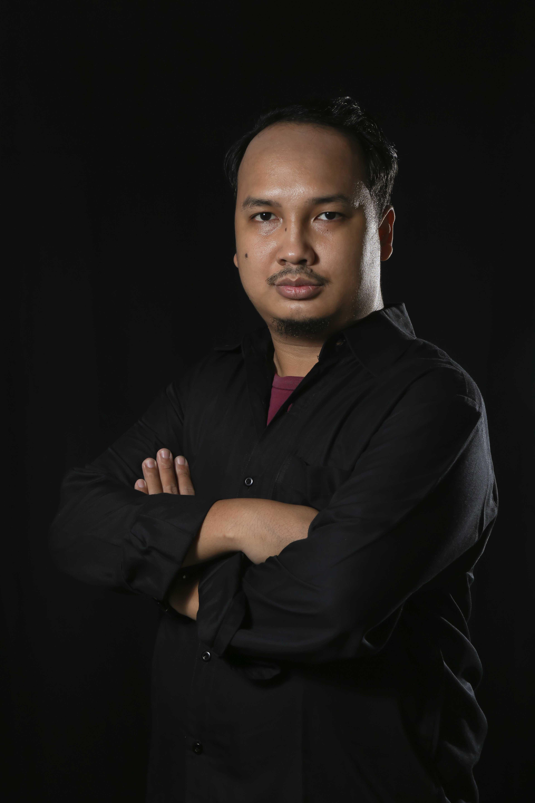

Tentang Saya

Halo! Saya Faisal Amin, videographer, editor, dan fotografer yang berbasis di Jakarta. Saya terbiasa mengerjakan berbagai jenis proyek, mulai dari dokumentasi acara, konten media sosial, pernikahan, video podcast, hingga fotografi.
Buat saya, visual bukan cuma soal gambar—tapi soal menyampaikan cerita dan emosi. Saya senang bikin karya yang nggak cuma enak dilihat, tapi juga terasa hidup dan bermakna.
Portofolio Video

Konten OMG TV – "Fenomena Sawer Online"
Ini salah satu konten yang saya edit dan saya juga sebagai videographernya untuk TV OMG.

Interior dan Exterior Damar Langit
Video yang saya ambil saat kunjungan ke Damar Langit Resort.

Egon Muller & Trimbach Winery Dinner
Dokumentasi acara Egon Muller & Trimbach Winery Dinner.

Facede
Kontak
Email: faisalicalamin@gmail.com
Instagram: @icalamin
WhatsApp: Chat via WhatsApp